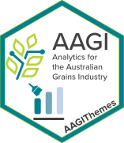

Package index
-
aagi_colours - A Vector of AAGI Colour Hex Codes
-
aagi_cols() - Extract AAGI Colours as Hex Codes
-
aagi_palettes() - List AAGI Palette Colour Combinations
-
add_aagi_logo() - Insert AAGI's Logo Into Any Graphic File
-
barplot_aagi() - Basic Barplots Using a Unified AAGI Style and Typography
-
boxplot_aagi() - Basic Boxplots Using a Unified AAGI Style and Typography
-
hist_aagi() - Basic Histograms Using a Unified AAGI Style and Typography
-
interpolate_aagi_palette() - Interpolate an AAGI Colour Palette to Expand the Colour Values
-
plot_aagi() - Basic X-Y Plotting Using a Unified AAGI Style and Typography
-
scale_colour_aagi() - Construct AAGI Colour Scales for ggplot2
-
scale_fill_aagi() - Construct AAGI Colour Fill Scales for ggplot2
-
theme_aagi() - A ggplot2 Theme Using a Unified AAGI Style and Typography for Plots
-
theme_ft_aagi() - Apply AAGI Theme to a flextable Object
-
watermark() - Add a Watermark Annotation Layer to a ggplot2 Object